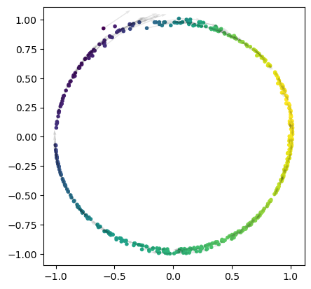

# testing to ensure it runs
FG = FlowGenerator(dimension=2, n_features=1)
points = FG.flow_sampler(torch.rand(50,2))
flows = FG.flow_artist(points)01 The Flow Generator of Directed Graphs
FEARFRED is built of three intertwingled components, two standard for a GAN, and one unique to its graph-embedding mission:
- The Generator - creates and samples from a flow field, intended to model the directed graph
- The Random Walkers - given a sample from the flow field, constructs a directed sub-graph with a gaggle of random walkers.
- The GNN discriminator - given a directeed (sub)graph, classifies it as belonging to the ground truth data.
This notebook defines and tests the Flow Generator.
FlowGenerator
FlowGenerator (dimension, n_features)
Base class for all neural network modules.
Your models should also subclass this class.
Modules can also contain other Modules, allowing to nest them in a tree structure. You can assign the submodules as regular attributes::
import torch.nn as nn
import torch.nn.functional as F
class Model(nn.Module):
def __init__(self):
super().__init__()
self.conv1 = nn.Conv2d(1, 20, 5)
self.conv2 = nn.Conv2d(20, 20, 5)
def forward(self, x):
x = F.relu(self.conv1(x))
return F.relu(self.conv2(x))Submodules assigned in this way will be registered, and will have their parameters converted too when you call :meth:to, etc.
.. note:: As per the example above, an __init__() call to the parent class must be made before assignment on the child.
| Details | |
|---|---|
| dimension | intrinsic dimension of the data manifold. Should be estimated prior to applying FEARFRED |
| n_features | features per node |
Visualizing the output
plot_flow_field_2d(FG)Testing
To examine the generative power of the FlowGenerator, here’s a couple of simple tests, where we instruct it to recreate toy manifolds based on a direct penalty. Each will receive points and associated flows and penalize them for adherence to a toy manifold.
Can it learn a circle?
random_samples = torch.rand(100,2)*2-1
angles_of_samples = torch.norm(random_samples,dim=1)*2*torch.pi
real_circle, real_flows = torch.zeros_like(random_samples), torch.zeros_like(random_samples)
real_circle[:,0] = torch.cos(angles_of_samples)
real_circle[:,1] = torch.sin(angles_of_samples)
real_flows[:,0] = -torch.sin(angles_of_samples)
real_flows[:,1] = torch.cos(angles_of_samples)
plot_directed_2d(real_circle,real_flows,angles_of_samples)def circle_loss(points, flows, features, random_samples):
loss = 0
# calculate angles of points
angles_of_samples = torch.norm(random_samples,dim=1)*2*torch.pi
real_circle, real_flows = torch.zeros_like(random_samples), torch.zeros_like(random_samples)
real_circle[:,0] = torch.cos(angles_of_samples)
real_circle[:,1] = torch.sin(angles_of_samples)
real_flows[:,0] = -torch.sin(angles_of_samples)
real_flows[:,1] = torch.cos(angles_of_samples)
# penalize all of the points to have distance 1 from the origin
loss += torch.linalg.norm(points - real_circle)
# penalize flows to be perpendicular to the points, i.e. have zero cosine similarity
loss += torch.sum(1-torch.abs(F.cosine_similarity(flows,real_flows)))
# penalize features to be the angles
loss += 0.01*torch.linalg.norm(features - angles_of_samples)
return lossmodel = FlowGenerator(dimension=2,n_features=1)
device = torch.device('cpu')
model.to(device)
opt = torch.optim.Adam(model.parameters())
train_accs, test_accs, losses = [], [], [] # lists to keep track of model stats
for e in trange(2000): # this is the number of epochs to train -- each epoch iterates through the entire dataset.
model.train()
samples = torch.rand(128,2)
points, flows, features = model(samples)
l = circle_loss(points,flows,features, samples)
l.backward()
opt.step()
opt.zero_grad()
losses.append(l.item())
plt.plot(losses)plot_flow_field_2d(model)
Results
Yes, the generator can successfully learn the flow field and sampling strategy of a circle. Using 8 layers instead of 3 helped it learn with 10x less training.